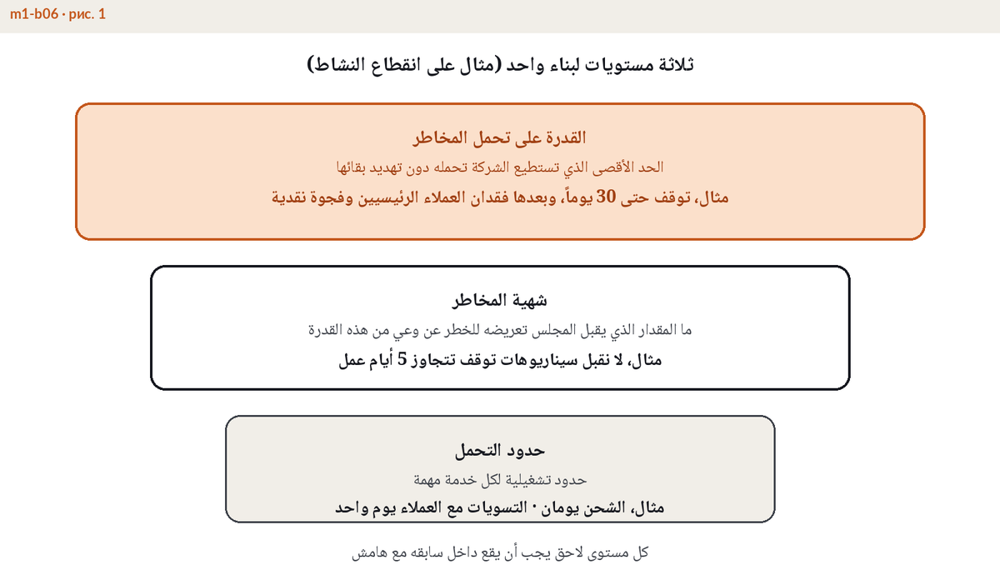

شهية المخاطر: كيف تحددها وتدافع عنها أمام مجلس الإدارة
وثيقة لمجلس الإدارة لا شعار على الجدار
تملك شركات كثيرة عبارة من نوع "نتبع نهجا متحفظا في المخاطر". هذه العبارة شعار وليست شهية. أما بيان شهية المخاطر العامل فهو أداة حوكمة بمفهوم ISO 31000 وإطار COSO ERM، يناقشه مجلس الإدارة ويعتمده ويراجع الأداء مقابله كل عام. وهو يتضمن خيارات حقيقية، أي المخاطر التي تسعى إليها الشركة عمدا لأنها مصدر أرباحها، وأيها تقبله كتكلفة لممارسة العمل، وأيها ترفضه مهما كان العائد المعروض. ويكتب البيان بحيث يمكن تجاوزه، لأن الحد الذي لا يستطيع أحد كسره لا يضبط شيئا. والاختبار العملي يستغرق ثواني، هل يستطيع مدير أن يرفض بهذه الوثيقة صفقة أو موردا أو اختصارا للإجراءات؟ إذا لم يتغير شيء في العمل بعد إعادة كتابة البيان فهو مجرد زينة على الجدار.
القدرة والشهية والتحمل، ثلاثة مستويات متداخلة
كثيرا ما تستخدم الكلمات الثلاث كمترادفات، وهذا خطأ يكلف غاليا. القدرة على تحمل المخاطر هي الجدار الخارجي، أي أقصى خسارة تستوعبها المؤسسة دون الإخلال بالملاءة أو السيولة أو التعهدات التمويلية أو شروط الترخيص. وتقع الشهية داخل القدرة، وهي الجزء الذي يقرر المجلس وضعه في دائرة الخطر عمدا لتنفيذ الاستراتيجية، مع ترك هامش أمان للمفاجآت التي لم يتنبأ بها أي سجل مخاطر. وتقع حدود التحمل داخل الشهية، وهي حدود قابلة للقياس لكل فئة وهدف، مثل ألا يتجاوز أي طرف مقابل واحد 25 مليون دولار، وألا يتوقف نظام المدفوعات أكثر من 4 ساعات، وألا تبقى ملاحظة تدقيق مفتوحة أكثر من 90 يوما. وكل مستوى يجب أن يقع داخل المستوى السابق، فالشهية التي تتجاوز القدرة ليست طموحا بل مقامرة بالميزانية العمومية.

مم يتكون بيان شهية المخاطر
البيان القابل للاستخدام يمتد على صفحتين إلى أربع صفحات ويضم خمس كتل.
- السياق والربط بالاستراتيجية. فقرة واحدة عما تسعى الشركة إلى تحقيقه والمخاطر التي لا بد من تحملها للوصول إليه.
- الشهية حسب الفئة. جدول قصير يغطي الفئات الرئيسية من ائتمان وسوق وتشغيل واستمرارية وامتثال وسمعة، مع موقف واضح لكل فئة ورقم كلما أمكن.
- المقاييس وحدود التحمل. الحدود المحددة من سقوف وعتبات KRI وحدود تحمل الأثر للخدمات الرئيسية، أي النقطة التي يتحول بعدها التعطل إلى ضرر غير مقبول.
- الأدوار. مالك مخاطر مسمى لكل فئة، ومن يراقب الأرقام، ومن يملك اعتماد الاستثناءات، وكم مرة يعيد المجلس النظر في الوثيقة.
- التصعيد وبروتوكول التجاوز. من يبلغ عند كسر الحد، وخلال أي مدة، وأي قرارات تلي ذلك.
تسلسل نزولا إلى الحدود، وتصعيد صعودا
البيان الذي يبقى في ملف المجلس لا يضبط شيئا. نزولا يعمل تسلسل شهية المخاطر، فأرقام المجلس تصبح حدود تحمل للفئات، وحدود التحمل تصبح سقوفا لوحدات الأعمال، والسقوف تصبح عتبات تشغيلية ومؤشرات KRI على لوحات متابعة الإدارة. شهية الائتمان تتحول إلى سقوف للأطراف المقابلة، وشهية الاستمرارية إلى أهداف تعاف لكل خدمة. وصعودا يعمل التصعيد، فالعتبة البرتقالية تستدعي انتباه الإدارة، والتجاوز الأحمر يصل إلى لجنة المخاطر أو المجلس خلال ساعات محددة لا في الاجتماع الفصلي المقبل. الاتجاهان يشكلان حلقة واحدة، وهذه الحلقة لا النصوص هي التي تحول الإعلان إلى ضبط فعلي. وتصميم هذه البنية من بيان وتسلسل وتصعيد تغطيه الوحدة M1 من برنامج ERGP.

كيف تدافع عنه أمام المجلس، خمسة أسئلة استعد لها
- "لماذا هذه الأرقام تحديدا؟" اربط كل رقم بالقدرة، وأظهر الحساب نزولا من حقوق الملكية والسيولة والتعهدات، لا من سقف العام الماضي مضافا إليه 10 بالمئة.
- "كم تكلفنا هذه الشهية؟" أحضر معك ثمن التحفظ، من صفقات مرفوضة ورأسمال محتجز وضوابط ممولة، فالمجلس لا يستطيع الاختيار بين شهيتين إلا إذا رأى كلفة المخاطرة وكلفة تجنبها معا.
- "كيف يبدو التجاوز وماذا يحدث بعده؟" اعرض سيناريو واحدا ملموسا من بدايته إلى نهايته، العتبة المكسورة ومن يتصل بمن والقرار المتخذ والإفصاح الصادر.
- "ما علاقة هذا بتعطل خدماتنا؟" أظهر الخط الواصل من الشهية إلى حد تحمل الأثر، أي عدد ساعات التوقف لكل خدمة رئيسية الذي يصبح الضرر بعده غير مقبول.
- "متى كنا آخر مرة خارج الشهية؟" أجب بصدق، فالمنظومة التي لم ترصد تجاوزا قط ليست دليلا على الأمان بل دليلا على الصمت.
أخطاء شائعة
- إعلان بلا تسلسل، فالمجلس يعتمد البيان بينما لا يشير إليه أي سقف أو عتبة أو مؤشر KRI في المستويات الأدنى.
- شهية بلا صلة بتحمل التعطل، فأرقام السوق والائتمان دقيقة بينما لا يذكر في أي مكان أقصى توقف مقبول للخدمات الرئيسية.
- مراجعة مرة كل خمس سنوات، والصواب مراجعة سنوية وبعد كل تغيير جوهري من استراتيجية جديدة أو استحواذ أو تنظيم جديد أو حادث وشيك أظهر أن الهامش أرق مما كان مفترضا.
- صياغة نوعية بحتة مثل "شهية منخفضة للمخاطر التشغيلية" لا يستطيع أي مدير تطبيقها على قرار فعلي.
صورة حية واحدة للمرونة لمجلس الإدارة ولجنة التدقيق، مؤشر واحد وتكلفة يوم التوقف وأهداف التعافي مقابل الواقع، تتغذى بأرقامكم أنتم.
اكتشفوا اللوحة ←